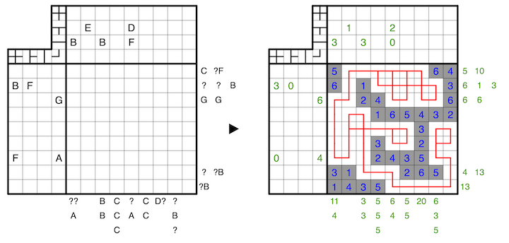

Clues outside the grid indicate the sums of connected groups of numbers in the respective row or column, in order, where unshaded cells serve as delimeters between groups.
Draw a totally connected loop network through the centers of all unshaded cells, which may branch or turn, but may not have any dead ends. A clue outside the grid indicates how many times the corresponding line shape (i.e. a cross, branch, straight line, or turn) appears in the corresponding row or column, irrespective of the line shape's rotation.
The letters A to J replace the numbers from 0 to 9, and no two letters may replace the same number. A question mark can be any number from 0 to 9, and for all clues, none may have a leading zero.
A 1-6 example is provided:
